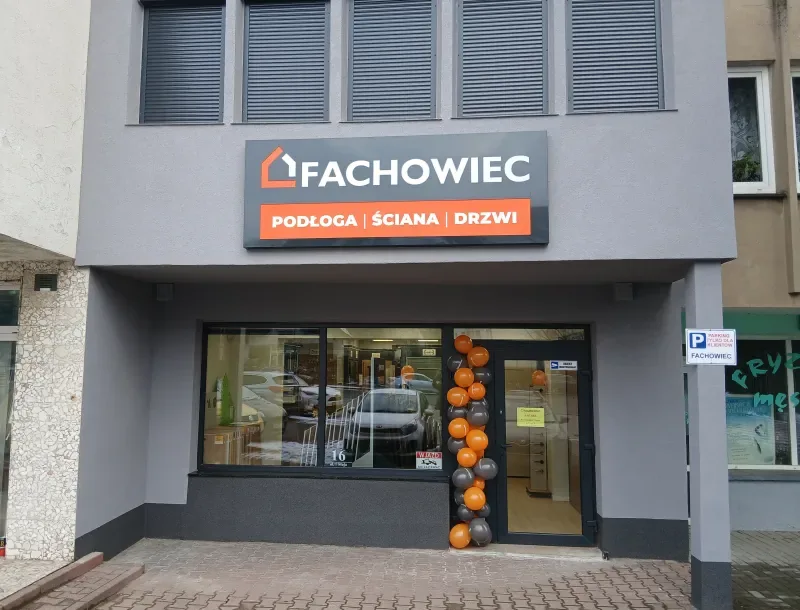
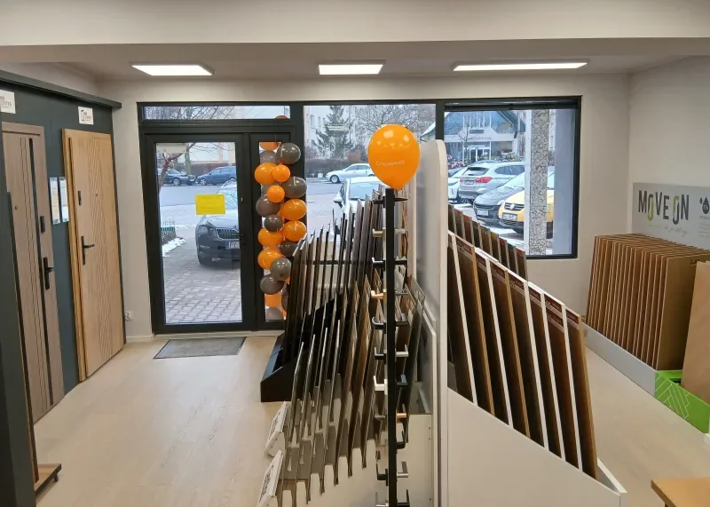
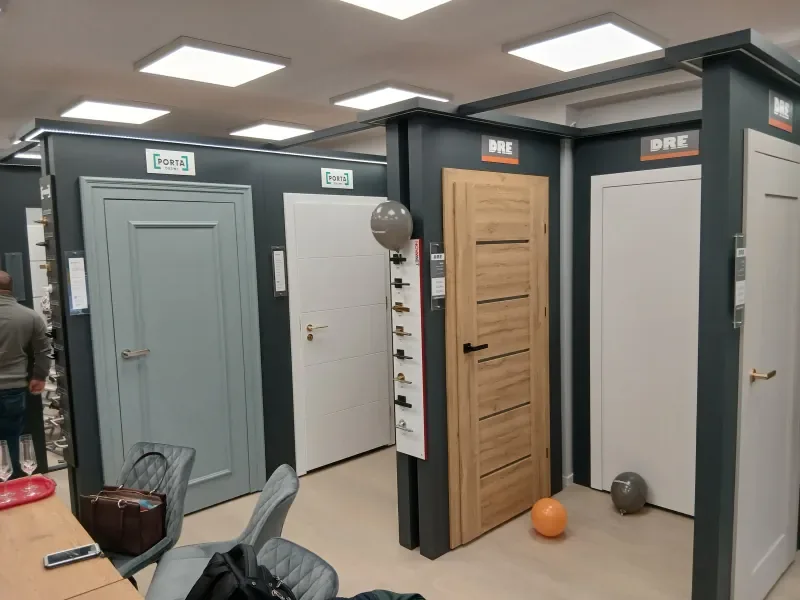
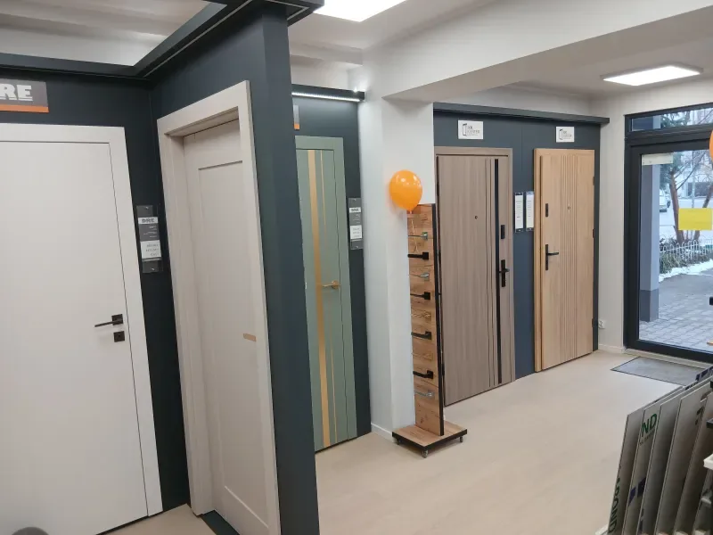
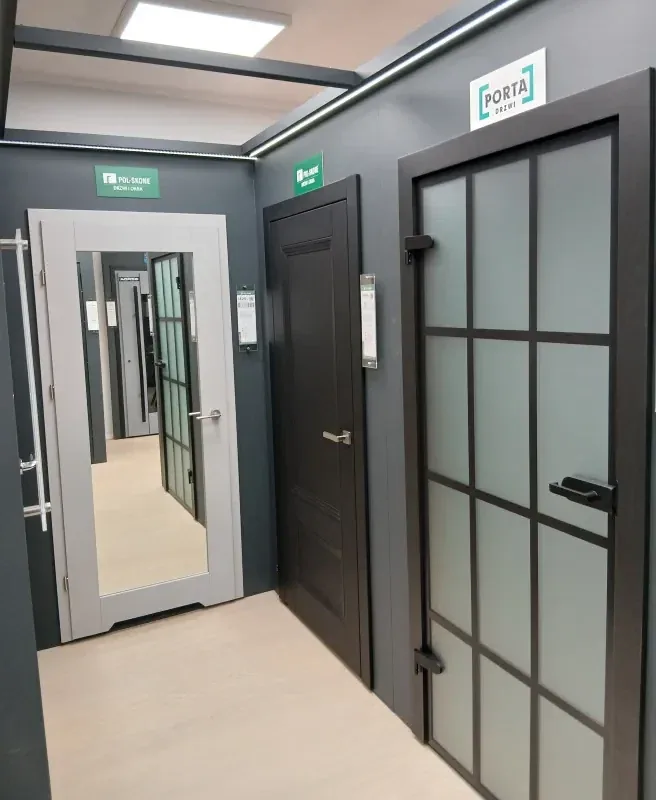
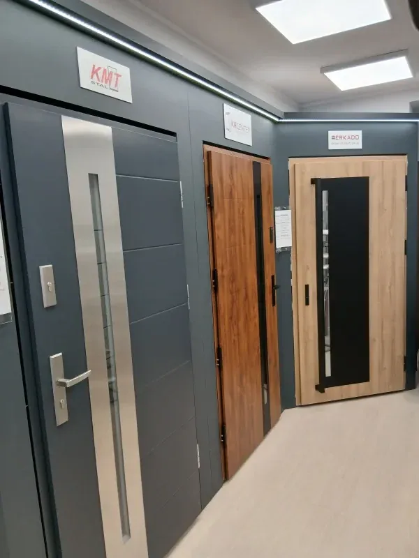
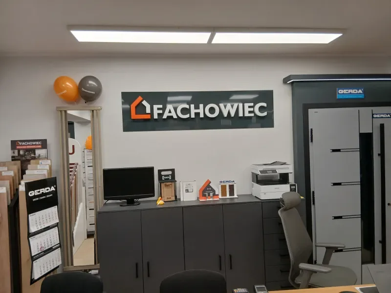
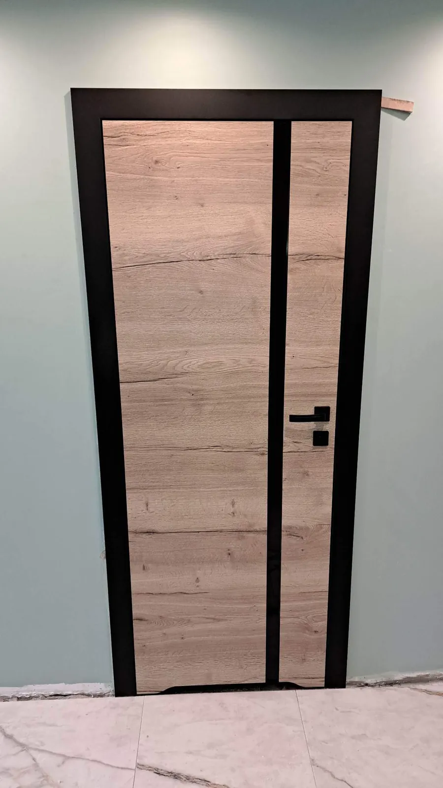
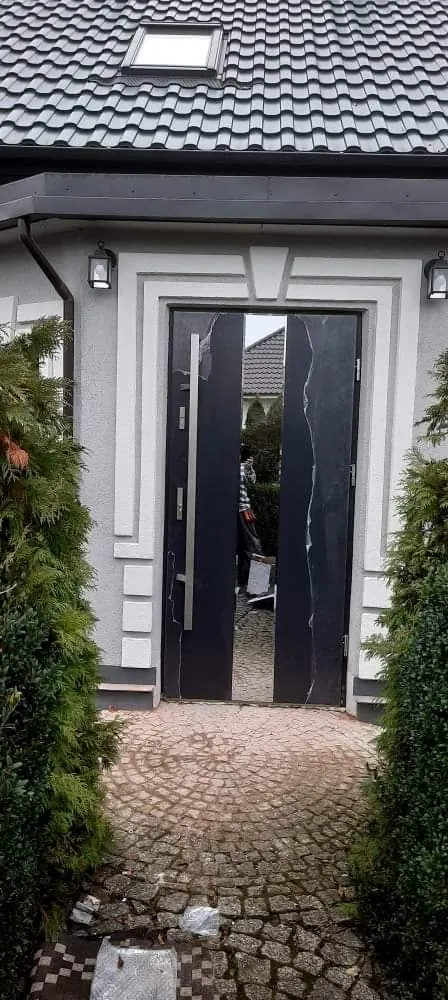
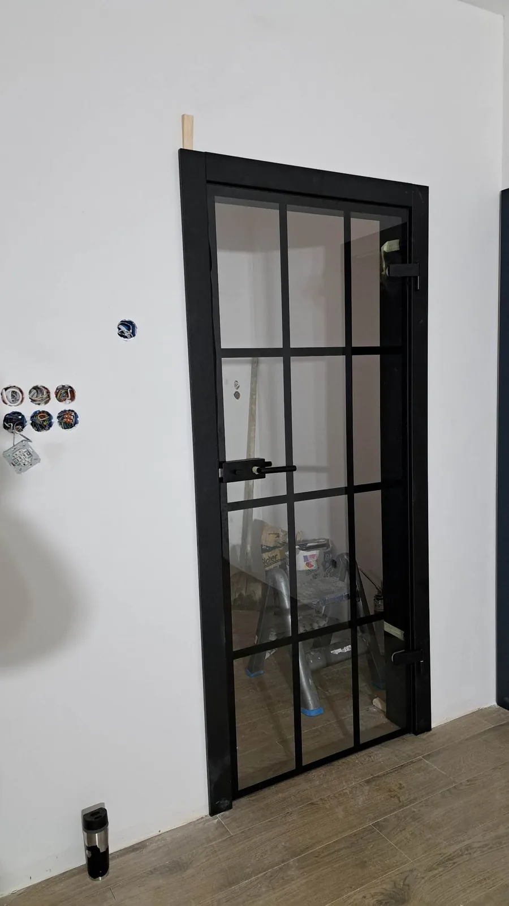

Pon.–pt. 9:00–17:00
Podłogi i drzwi w Głogowie z montażem
Salon Grupy Fachowiec przy ul. 1 Maja 16. Markowe podłogi, panele ścienne i drzwi – z doradztwem, pomiarem, transportem i montażem.
- Adres
- ul. 1 Maja 16, Głogów
- Godziny
- pon.–pt. 9:00–17:00
- Montaż i pomiary
- 695 898 059



Pomiar
Mierzymy pomieszczenia i otwory drzwiowe na miejscu.
Transport
Dowozimy zakupione podłogi i drzwi pod wskazany adres.
Montaż
Układamy podłogi i montujemy drzwi w ustalonym terminie.
Doradztwo specjalistów
Dobieramy materiał do pomieszczenia i sposobu użytkowania.
Próbki materiałów
Porównasz dekory na żywo, w dziennym świetle.
Szeroki asortyment
Podłogi, ściany, drzwi, tarasy i akcesoria w jednym miejscu.
Na podłogę, na ścianę i do drzwi
Pięć działów, jeden salon. Wszystko obejrzysz na ekspozycji przy 1 Maja, zanim cokolwiek zamówisz.
Podłogi
Panele laminowane, podłogi winylowe LVT i deska drewniana.

Drzwi
Wewnętrzne, łazienkowe, przesuwne, do mieszkań i zewnętrzne.

Ściany
Panele ścienne i listwy – ściana bez kucia i tynkowania.

Deski tarasowe
Kompozytowe i drewniane, z legarami i akcesoriami.

Akcesoria
Listwy przypodłogowe, podkłady, progi, klamki.

Spacer po salonie





Podłoga to decyzja na lata. Lepiej podjąć ją na żywo
Podłoga ma pasować do wnętrza, ale przede wszystkim wytrzymać codzienne użytkowanie. Dlatego w salonie możesz ją zobaczyć, dotknąć i porównać z innymi.
Laminat, winyl czy drewno?
Doradcy pomogą dobrać materiał do pomieszczenia i sposobu użytkowania: odporność na ścieranie i wilgoć, sposób montażu, ogrzewanie podłogowe. Prawdziwy odcień, struktura i to, jak deska odbija światło, trudno ocenić ze zdjęcia – na ekspozycji widać to od razu.
Drzwi dobrane do podłogi
Podłoga i drzwi to elementy jednej aranżacji. Nie muszą być w tym samym kolorze – ciekawy efekt daje też kontrast. Przy drzwiach wewnętrznych liczy się wygląd, konstrukcja, sposób otwierania, przeszklenie i akustyka. Zewnętrzne mają izolować i chronić, a przy okazji pasować do elewacji.
Od zakupu do montażu
Zakup to jeden etap remontu. Równie ważne są transport i montaż, bo od nich zależy, jak podłoga i drzwi będą wyglądać za kilka lat. Szczegóły realizacji ustalisz z doradcą w salonie.
Marki, które obejrzysz na miejscu
Na podstawie ekspozycji w salonie. Dostępność konkretnych modeli potwierdzi doradca.
Montujemy drzwi od 2017 roku
Salon prowadzi firma ANTABA Artura Słubowskiego. Sprzedajemy i montujemy drzwi wewnętrzne, przesuwne, do mieszkań i zewnętrzne – zawsze po pomiarze.
„Usługa wykonana perfekcyjnie – doradztwo, wybór, uzgodniony czas wykonania usługi, fachowość, ceny przyzwoite, duży wybór, fachowa obsługa.”
A. I. · opinia na Oferteo, 2018
„Super doradztwo, bardzo miła Pani, kompetentna. Duży wybór drzwi, super montażyści, fachowo podchodzą do swojej pracy. Wykonanie na 5+, bez uwag.”
T. · opinia na Oferteo, 2024



Byłeś już u nas i masz wybrane produkty?
Zamów je telefonicznie lub mailowo, bez ponownej wizyty w salonie.
ul. 1 Maja 16, Głogów
| Poniedziałek – piątek | 9:00–17:00 |
| Sobota – niedziela | nieczynne |